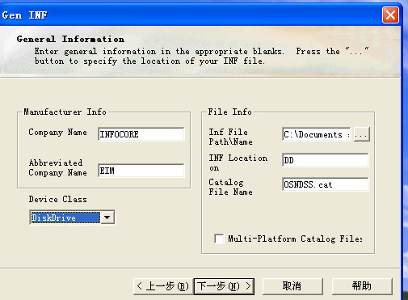
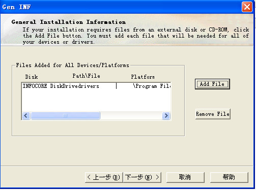
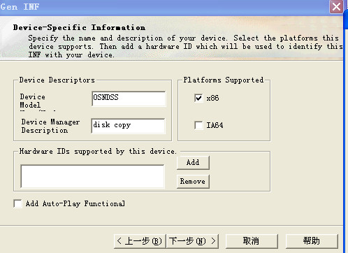
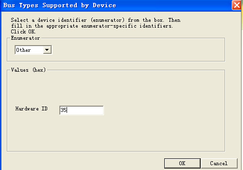
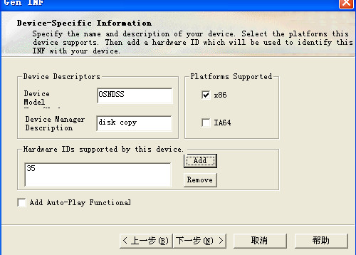
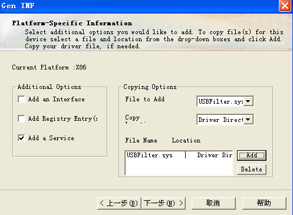
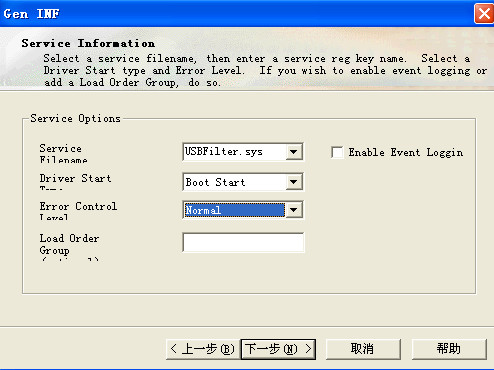

DDK生成驱动安装信息INF文件 INF文件为该设备提供了一个全面描述硬件参数和相应驱动文件(DLL文件)的信息。 DDK 自带的工具里提供了一个geninf.exe 专门生成INF工具的，挺好用（由衷的告诉新手，安装文件最好用这个或则其他工具生成，如果自己写一旦写错会很难找到错误的，如果是安装不上，那还可以找找错哪里了，但是如果装上了驱动没起作用，无法进入DriverEntry这类找起来就麻烦了）； 填写基本信息 1.公司名称和 INF文件string域内 代表公司名称的 EIM变量2.驱动类型这里选的是diskDriver3.Inf文件存放的地址，INF LOCATION 是什么还不清楚，貌似填或不填影响不大4.数字验证文件名字Device_Bridge_Driver.cat (貌似没什么用) 1.驱动文件选择，直接游览文件找到。sys文件即可；  1.驱动名称和驱动描述；2.x86平台和IA64平台选择 添加设备 identifier 这里选择Other了，35也是随便填的，还没搞清楚作用，下次搞清楚了再修改；   1.填写注册表的，一般只要一个Add a Service 就行了，当然你需要的话也可以 自己再建一个Add registry entry 2.然后点击Add 会自动把 文件域copy 源文件路径和copy 到Driver directory 上面选择的add a service 中需要填写的服务名，驱动启动类型 这里选择的是随系统启动而启动，错误类型NORMAL， 参见 INF文件详解 父主题： WDM驱动开发